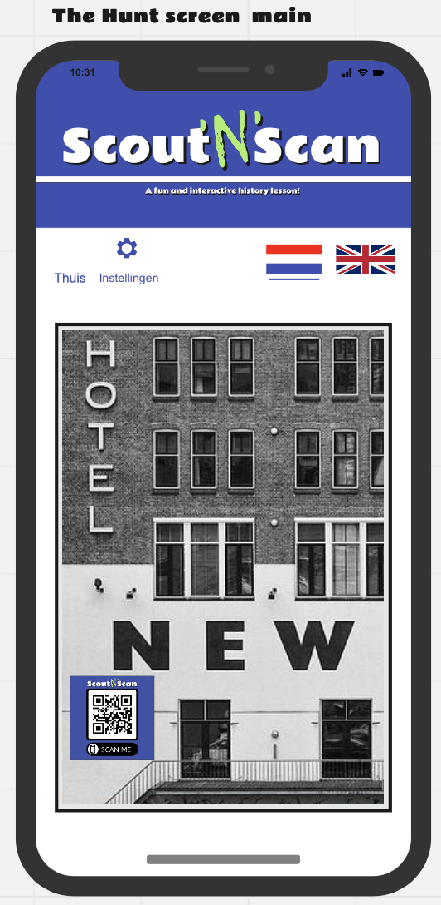
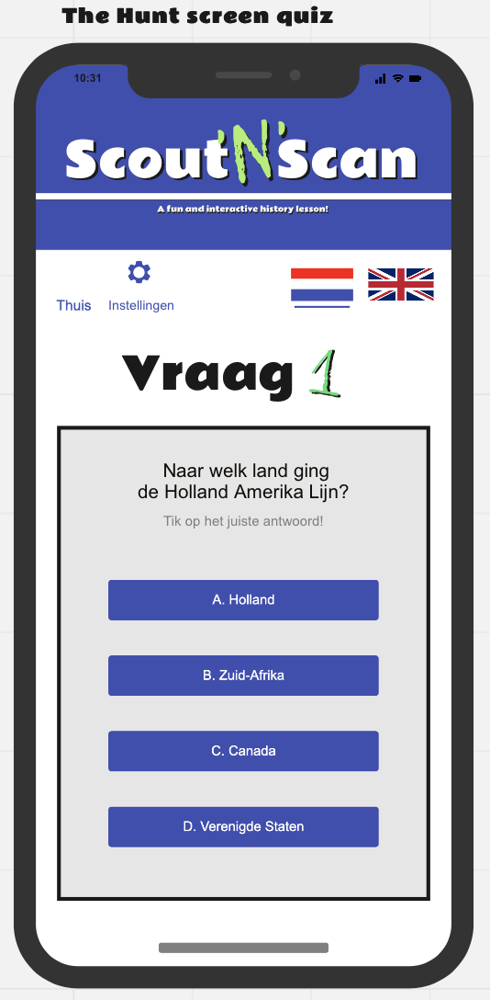
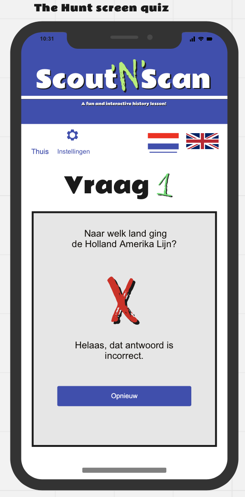
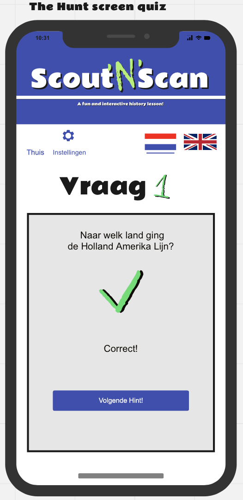
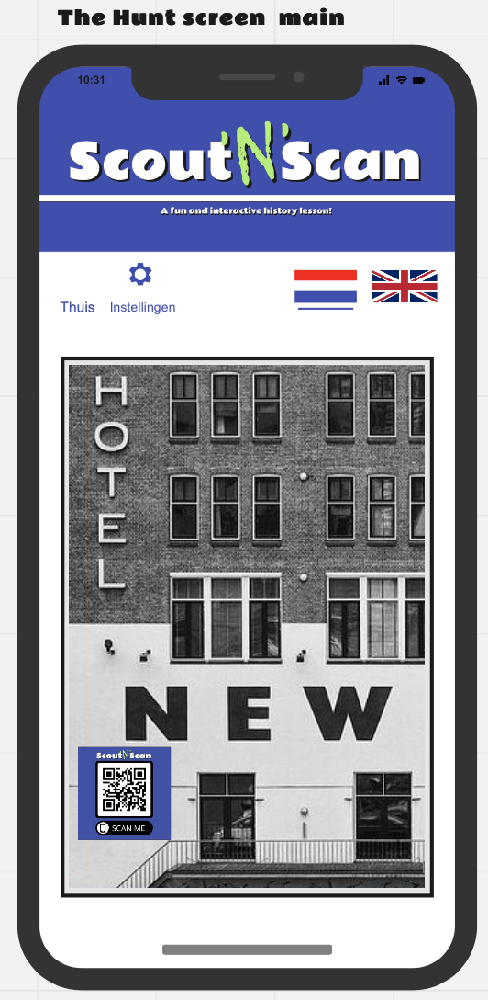
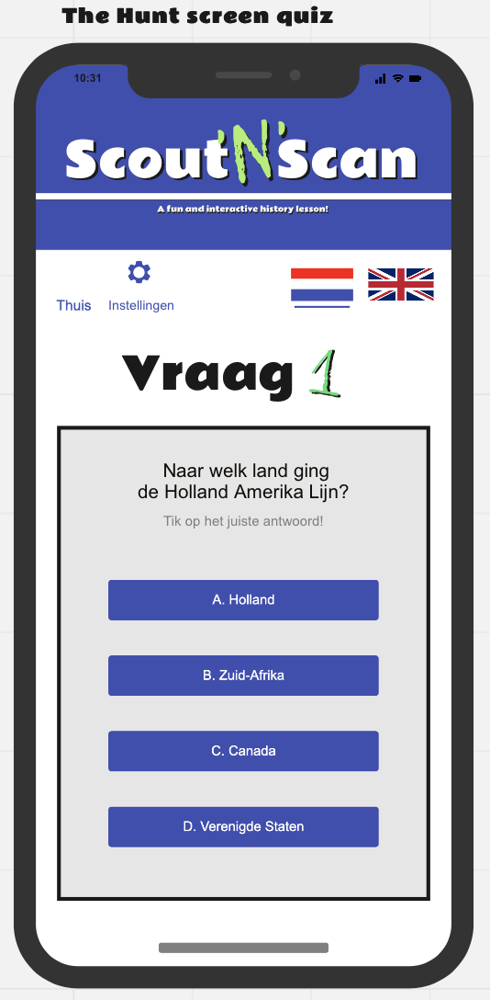
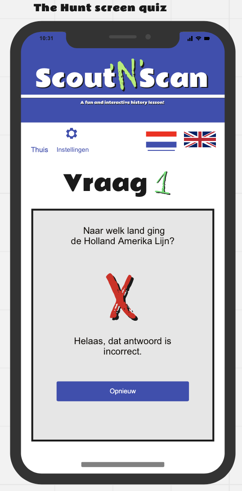
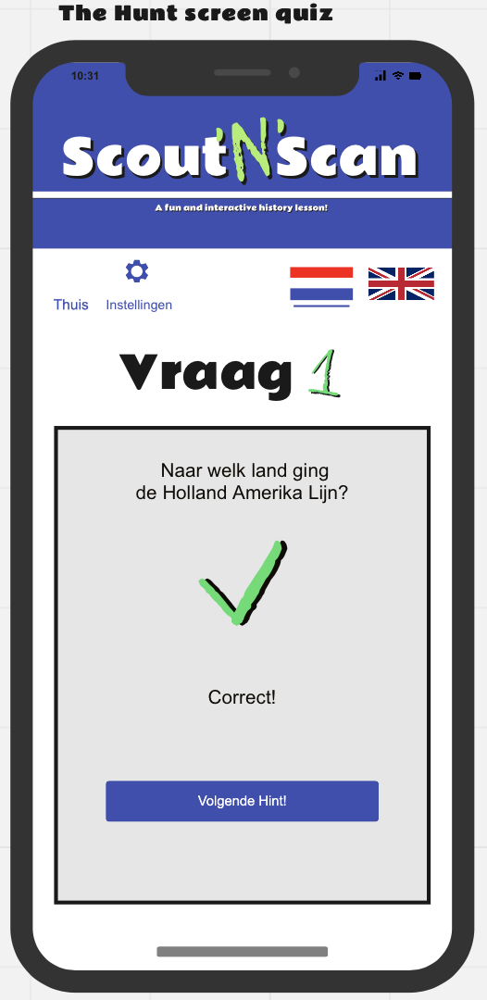

Op deze pagina kunt u alle informatie vinden over de werking van de app scout 'n' scan
Startpagina
Dit is de startpagina. Hier kunt u de taal veranderen naar engels door op de Amerikaanse vlag te tikken en u kunt weer terug naar het Nederlands door op de Nederlandse vlag te tikken.
Als u op 'AR' tikt zult u naar het AR-gedeelte van de app gaan.
Nadat u op de AR knop hebt gedrukt komt u hier (eerste plaatje) terecht. U kunt verder door op de 'X' te tikken of naast het vlak met tekst.
Nu u op de volgende pagina terecht gekomen bent (zie het 2de plaatje), kunt u rondkijken met uw telefoon op het plein van hotel New York. Als u een pictogram ziet zoals beschreven op de vorige pagina dan kunt u erop klikken.
Als u op zo'n pictogram tikt krijgt u informatie over een specifiek deel van hotel New York en haar verleden (plaatje 3).
Nadat u op de 'speurtocht' knop hebt gedrukt komt u hier (eerste plaatje) terecht. Hier staat een hint voor waar u een QR-code kunt vinden. U kunt verder door op de 'X' te tikken of naast het vlak met tekst.
Nu u op de volgende pagina terecht gekomen bent (zie het 2de plaatje), kunt u zoeken naar de QR-codes met gebruik van de hints. Als u een QR-code vindt, dan is de bedoeling dat u de code scant.
Als u de code scant zal er een quizvraag op uw scherm terecht komen (plaatje 3). Als u de vraag fout heeft zal er een bericht komen op uw scherm dat zegt dat u het antwoord fout heeft (plaatje 4). Tik op probeer opnieuw om het opnieuw te proberen
Als u het antwoord goed heeft dan krijgt u een bericht op uw scherm (plaatje 5) met 'gefeliciteerd, je antwoord was juist.' en een hint voor waar de volgende QR-code. Tik dan op het kruisje om weer verder te gaan met het zoeken van de QR-codes (plaatje 3).


 






